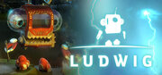

LUDWIG
LUDWIG
Detalles
|  | |
| Tiempo de juego | No Jugado |
| Última actividad | Nunca |
| Añadido | 04/09/2014 |
| Modificado | Nunca |
| Estado de finalización | Not Played |
| Librería | Steam |
| Fuente | Steam |
| Plataforma | PC (Windows) |
| Fecha de lanzamiento | 06/06/2014 |
| Puntuación de la Comunidad | 46 |
| Puntuación de la Crítica | |
| Puntuación de usuario | |
| Género | Adventure Indie Simulation |
| Desarrollador | ovos |
| Editor | ovos |
| Característica | Single Player |
| Enlaces | Community Hub Discussions Guides News Store Page PCGamingWiki |
| Tag | |
Descripción
OVERVIEW
2098. Mankind has left the Earth and is now living in space colonies. Ludwig, a research robot from a faraway civilisation and his spaceship are looking for forms of new energy. Unfortunately, mankind´s new space colonies are not listed on his interstellar maps, which results in a fatefull crash with the physis, the biggest station with a billion inhabitants. The crash does not only tear a huge hole into the physis´ protective cover, but also damages Ludwig´s spaceship badly enough for him to lose control of it and crashland on planet Earth. Now it´s a race against time.
Will Ludwig succeed and get his spaceship going in time to save the physis?
FEATURES
WHAT THE GAME IS ABOUT
2098. Mankind has left the Earth and is now living in space colonies. Ludwig, a research robot from a faraway civilisation and his spaceship are looking for forms of new energy. Unfortunately, mankind´s new space colonies are not listed on his interstellar maps, which results in a fatefull crash with the physis, the biggest station with a billion inhabitants. The crash does not only tear a huge hole into the physis´ protective cover, but also damages Ludwig´s spaceship badly enough for him to lose control of it and crashland on planet Earth. Now it´s a race against time.
Will Ludwig succeed and get his spaceship going in time to save the physis?
FEATURES
- Explore the area where the spaceship crashed or an enormous dam, travel by balloon through the snow and ice or cross an almost endless desert. There’s so much to discover!
- Find the weirdest components and construction plans. Use them to develop practical new gadgets to supply Ludwig with energy!
- Discover physical phenomenons and analyse them in order to reveal the laws of physics and solve the tricky puzzles in the game.
- thrilling storyline arching over 4 unique environments
- more than 8 hours of gameplay
- developed with physics-teachers, pupils and educators - 100% curiculum based
- comes along with didactic materials for school useage
WHAT THE GAME IS ABOUT
- The game tells the story of "Ludwig" - a small research robot who is on an important mission to find new forms of energy for the home planet of the Robotronics. After a long journey he finally reaches earth - just to find it abendoned. Humans exhausted nearly all energy sources and left the planet. They live in big space stations. Unfortunately Ludwig hits one of these spacestations with his spaceship and crashes down on earth. A damaged spaceship, a far away homeplanet in desperate need of energy know-how and 1 billion humans in a damaged spacestation - now it´s up to you as a player to clean up this mess!
- While following the storyline Ludwig has to learn about the human technologies on earth. Starting with the most basic form of energy production - combustion - he has to advance through a techtree to find and learn about more sophisticated forms of renewable energy.
- Ludwig doesn´t know anything about the laws of physics on earth (remember - he´s an alien from a far away robot civilization called the Robotronics...). So he uses his scanner to find and analyse physical phenomenons which appear in the gameworld. All the knowledge is stored in a dynamical conceptmap - the knowledgebase.
- The knowledgebase is empty when you start the game. While playing, it fills step by step with new nodes. You will end up with a huge concept map of physical knowledge on renewable energies. (developed together with physics teachers and educators).
- The game features 4 unique "themeworlds". These quests in these environments are based on a specific topic (combustion, water power, wind energy, solar energy). The themeworlds are connected by the storyline.
- Every themeworld features a minigame - called laboratory. A laboratory illustrates the core knowledge of the themeworld (for example: How does a pumped storage power station work? or Where should i place my windmills to get the most efficient energy output?
- All this educational gameplay is nicely embedded in the storyline. The game is NOT devided into playing- and learning- or assesment elements. You always KEEP PLAYING the game!
- Ludwig is designed to be fun to play (please judge for yourself ;-) but it can also be played in schools. The game comes along with a set of didactical materials for teachers to support embedding Ludwig in classes.